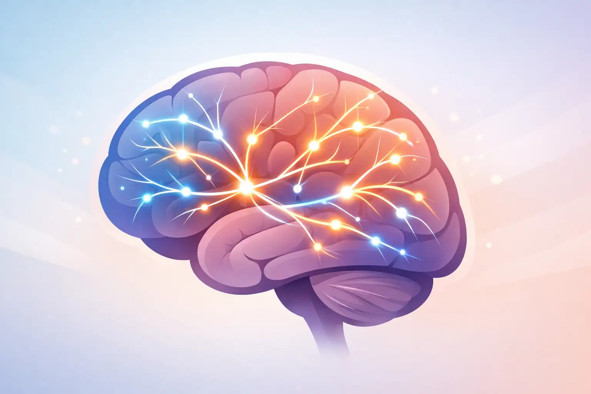
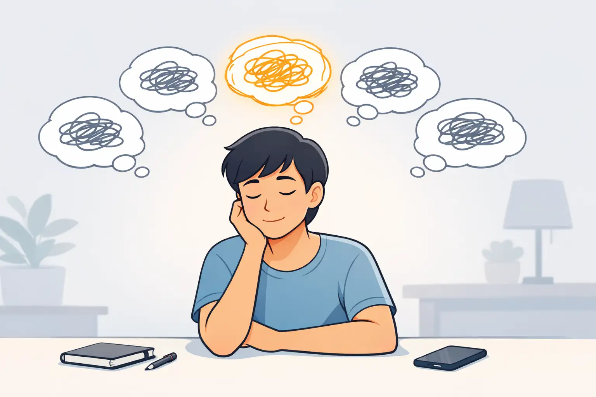
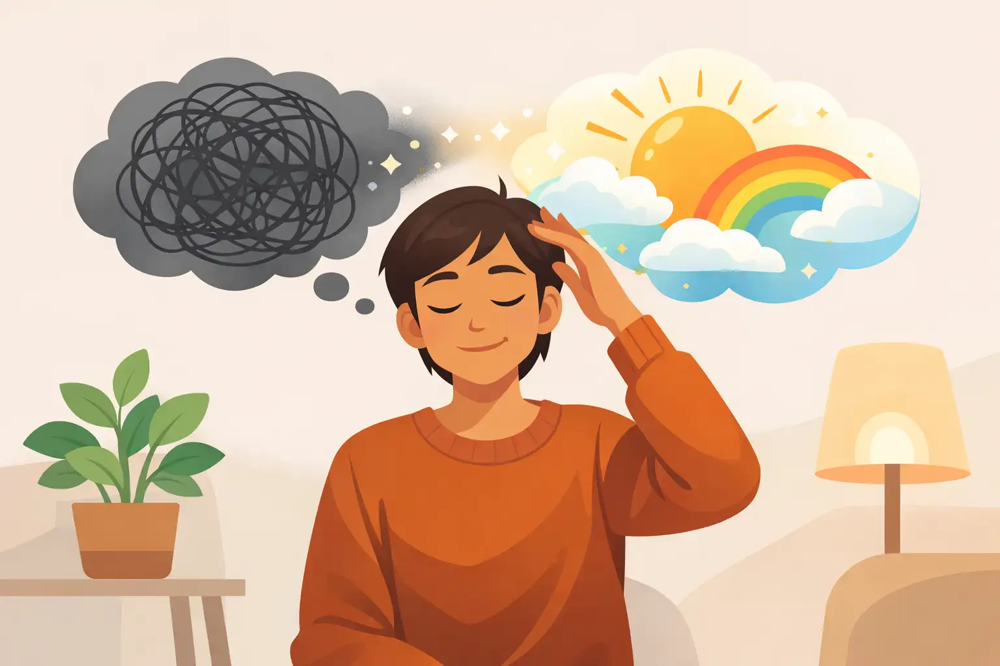
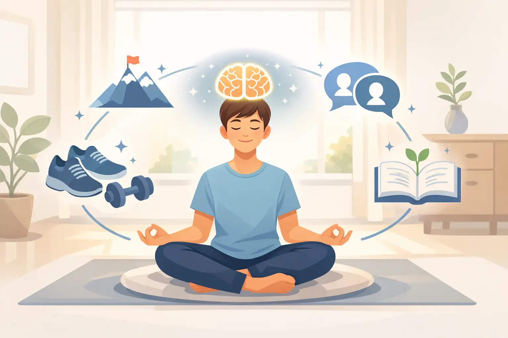

Learn how neuroplasticity works and why your brain’s ability to change matters for your happiness and success.

Neuroplasticity is your brain’s natural ability to adapt and change, even as an adult. For years, scientists believed our brains stopped growing after childhood, but research has proven this isn’t true. Every experience, thought, and action shapes your brain, creating and strengthening new connections while weakening old ones.
For example, when you repeatedly practice gratitude, your brain gradually forms stronger neural pathways related to positive thinking. On the other hand, repeatedly focusing on worries can reinforce negative circuits.
A common misconception is that people can’t change deeply ingrained thought patterns or habits. In reality, neuroplasticity means anyone can “rewire” their mindset, given time and consistent practice.
To start harnessing neuroplasticity, you simply need to become more aware of your habitual thoughts and choose small, positive actions each day. In this course, you’ll learn how easy exercises can make a real difference in your mood, focus, and overall outlook.
Which statement best describes neuroplasticity?
Identify your recurring negative thoughts so you can begin to consciously change them.

Before you can rewire your mindset, you need to know what needs to change. Many negative thought patterns run on autopilot—thoughts like 'I’m not good enough' or 'Things never work out for me.' These automatic thoughts carve deep channels in your brain over time.
A simple way to start noticing them is by keeping a small journal or using a notes app on your phone. Whenever you catch yourself thinking negatively (even about small things), jot it down. Over a week, patterns will emerge, revealing which thoughts appear most often.
It’s important to remember: awareness is about observation, not self-criticism. Don’t blame yourself for negative thoughts; instead, get curious about them. This shift in attitude makes it easier to notice these patterns without feeling defeated.
Once familiar with your automatic thoughts, you’ll be better prepared to use the daily exercises in the next lessons to challenge and reshape those patterns effectively.
What is the main benefit of tracking your negative thoughts?
Use a simple daily exercise to interrupt negative thinking and replace it with positive alternatives.

One powerful neuroplasticity exercise is reframing negative thoughts as soon as you notice them. Once you’re aware of a negative pattern, pause and ask yourself: 'Is there a more helpful or optimistic way to look at this?'
For example, if you think, 'I always mess up,' pause and reframe: 'Sometimes I make mistakes, but I’m learning and improving.' This small action starts to create new mental pathways focused on growth instead of self-criticism.
A common pitfall is trying to 'fake' positive thinking by denying real challenges altogether. Instead, acknowledge your feelings and then choose a realistic, encouraging perspective.
Practicing this even just once or twice a day is a great start. Over time, these new ways of thinking feel more natural—the old negative tracks slowly weaken as your brain strengthens new, supportive ones.
What’s the best way to reframe a negative thought?
Establish a daily habit that primes your brain for positivity and action from the moment you wake up.
Your first thoughts in the morning often shape your attitude and actions for hours. With neuroplasticity in mind, a simple 2-minute exercise can get your brain off to a positive start each day.
Right after you wake up, spend two minutes writing (or speaking aloud) three things: 1) Something you’re grateful for, 2) One personal strength or achievement, and 3) One intention for how you want to feel or act today (such as ‘focused,’ ‘kind,’ or ‘courageous’).
The most common mistake is setting an unrealistic goal like meditating for 30 minutes right away, leading to skipped days and discouragement. The 2-minute morning mindset practice is designed for consistency and results.
Try this first thing tomorrow. Keep your entries short—what matters is not perfect answers, but regular practice. Over several weeks, you’ll notice your mindset naturally shifts as your brain strengthens its positive circuits.
Which of the following best describes the 2-minute morning mindset exercise?
Understand how repetition and small wins help your brain solidify new ways of thinking.
Changing your mindset is not about instant transformation but about steady, daily progress. Just like strengthening muscles, neural pathways grow firmer the more you activate them—with each repetition, your brain gets better at choosing the new thought or habit over the old one.
For example, if you reframe a negative thought each time it appears, over weeks and months, this will become your new default response. Even if you slip up on some days, don't be discouraged. What counts is that you return to the practice.
Many people give up too soon because they expect dramatic change in a week. In reality, even small, regular shifts add up and become “automatic” as your brain rewires itself. Tracking your mood and habits with a checklist or journal is a practical way to see how far you’ve come.
Stay patient, celebrate your small victories, and remember: you are building a new mental pathway every single day you practice.
How can you make new thought patterns stick?
Apply what you’ve learned to continue growing and exploring more positive, successful thinking every day.

Neuroplasticity is a lifelong gift. Now that you know the fundamentals, explore other brain-supporting habits, like regular physical activity, mindfulness meditation, and connecting with positive people. All these actions strengthen your mental flexibility.
You might find it helpful to use audio guides, daily reminders, or join a community to keep yourself motivated and accountable. These provide gentle nudges and fresh ideas as you continue building your success mindset.
A mistake many beginners make is believing that once they’ve improved, their work is done. In truth, maintaining and expanding a positive mindset takes ongoing curiosity and effort—just like maintaining physical health. Try new exercises or adapt routines to fit your changing life and goals.
Make small adjustments, learn from your experiences, and celebrate the progress you see. Every step forward is real change. Keep your mind open to new possibilities and enjoy the journey.
What’s one effective way to maintain and build on your positive mindset?
Well done! You now know how to harness neuroplasticity and daily mental exercises to create a brighter, more successful mindset. Keep practicing and enjoy your journey of growth.
Use the button below to take the next step, or start over and run through the course again.
Access lifelong daily audios. Free 7 day trial, no credit card requiredDownload the information in this course to keep and refer back to